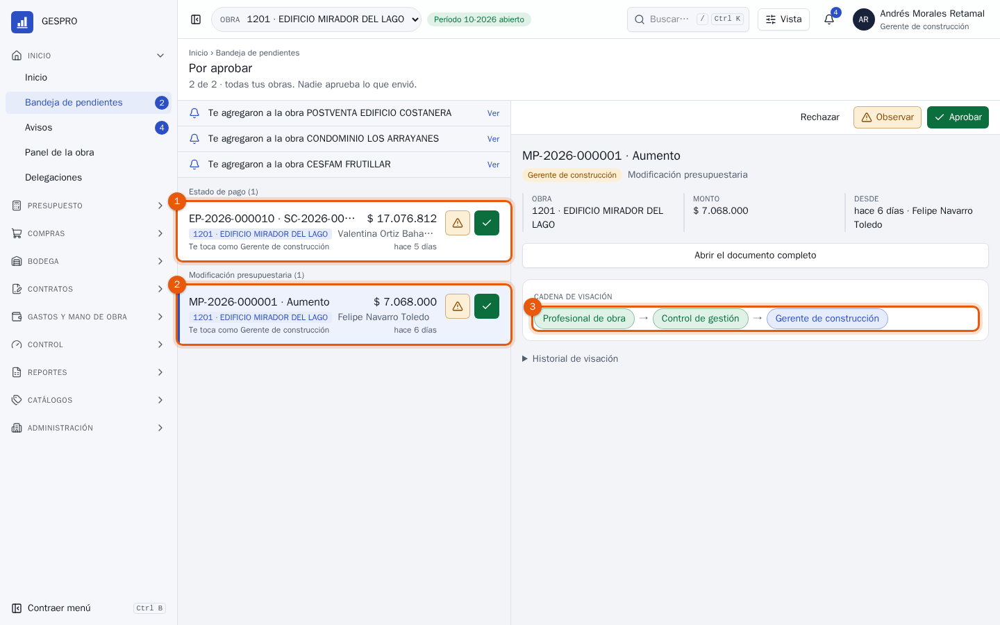
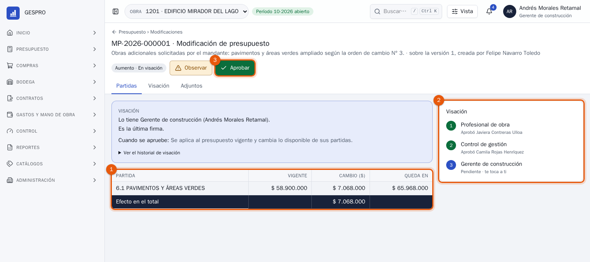
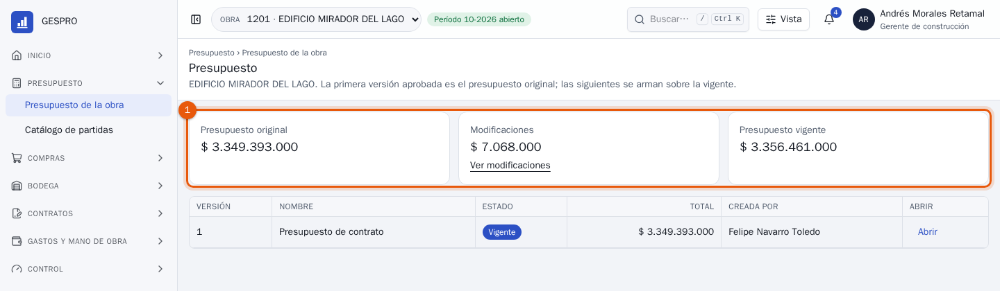
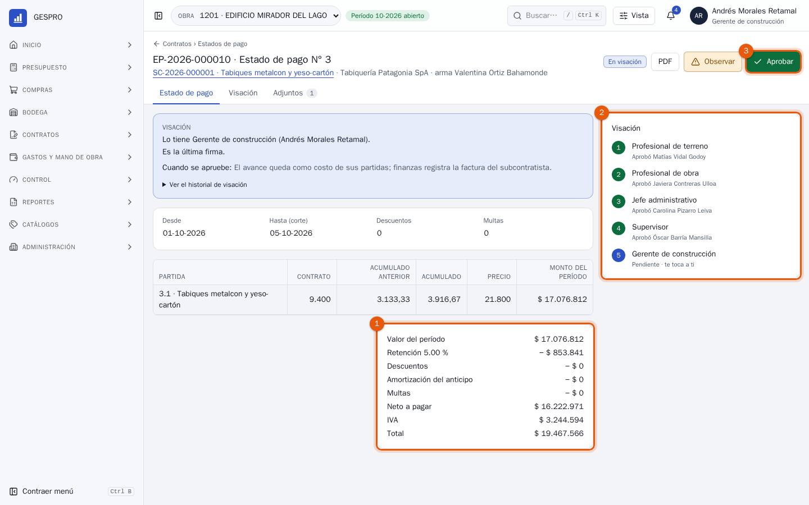
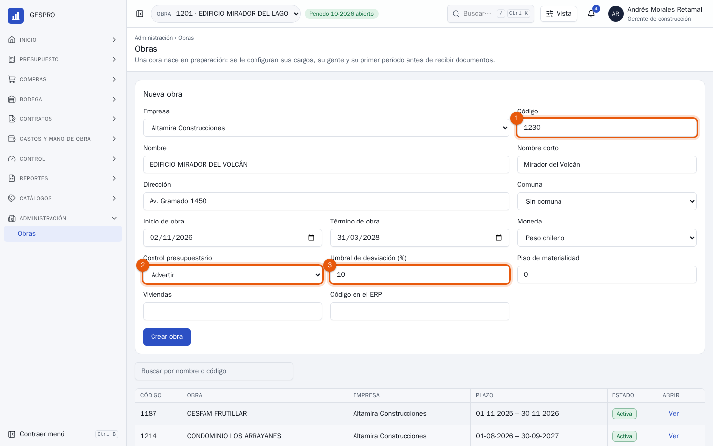
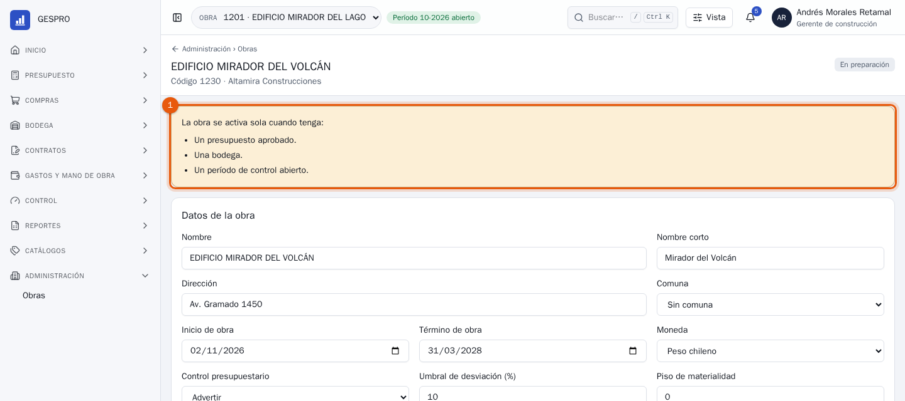
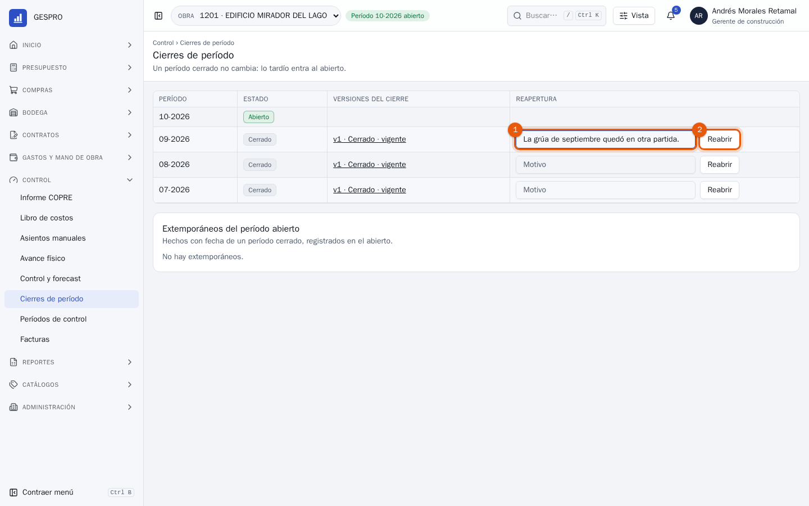

Manual de usuario
Gerente de construcción en GESPRO
Para quien responde por las obras ante la empresa: la última firma de lo que compromete más plata, los presupuestos y sus aumentos, las obras nuevas y la reapertura de un mes ya cerrado.
- Rol en GESPRO
- Gerente de construcción
- Sus pantallas
- Bandeja · Presupuesto · Estados de pago · Administración › Obras · Cierres de período
- Ejemplos con
- Andrés Morales · obra 1201 Edificio Mirador del Lago
1Lo que hace el gerente de construcción
El gerente de construcción no arma documentos: los firma al final de su cadena, cuando ya pasaron por la obra. Firma lo que compromete el presupuesto o lo cambia, y lo que la obra pide fuera de lo normal. Los pasos destacados son los de este manual.
- La obra armaTerreno, administración, presupuesto.
- La obra visaProfesional de obra, supervisor, control de gestión.
- Última firmaPresupuestos, aumentos, contratos y estados de pago.
- Obras nuevasSe crean en preparación.
- Reabrir un mesCon motivo, cuando hay que corregirlo.
| Documento | Cuándo firma el gerente de construcción |
|---|---|
| Versión del presupuesto | Siempre, después del profesional de obra. |
| Modificación presupuestaria | Cuando aumenta el total. Una transferencia o una disminución termina en control de gestión. |
| Solicitud de materiales | Cuando es urgente o va fuera de presupuesto. |
| Subcontrato y estado de pago | Siempre, al final de la cadena de cinco. |
2La bandeja
Lo que espera tu firma llega a la bandeja, agrupado por tipo de documento y de todas tus obras.

- El estado de pago de la tabiquería, que ya firmaron terreno, el profesional de obra, el jefe administrativo y el supervisor.
- La modificación presupuestaria: un aumento de $ 7.068.000. Tocarla muestra su resumen a la derecha.
- La cadena: tu firma es la última.
3Un aumento de presupuesto
El mandante pidió ampliar los pavimentos y áreas verdes. Presupuesto armó el aumento y la obra ya lo visó.

- Las partidas que cambian: cuánto tienen hoy, cuánto suben y en cuánto quedan. Abajo, el efecto en el total.
- La cadena: el profesional de obra y control de gestión ya firmaron.
- Aprobar aplica el aumento al presupuesto vigente.

- El presupuesto vigente ya incluye el aumento. El original no cambia: la diferencia queda a la vista como modificaciones.
4La última firma del estado de pago
Cuando el estado de pago llega a ti, la obra ya revisó las cantidades y el contrato. Tu firma lo deja como costo y lo pasa a finanzas.

- El cálculo: el valor del período, la retención, los descuentos, el anticipo, las multas, el neto, el IVA y el total.
- La cadena: quién firmó antes y cuándo.
- Aprobar. El avance queda como costo de su partida y finanzas puede registrar la factura. Observar lo devuelve a quien lo armó, con el motivo escrito.
5Una obra nueva
En Administración › Obras, Nueva obra abre el formulario.

- El código de la obra, único en la empresa, y sus datos: nombre, dirección, plazo y moneda.
- El control presupuestario: qué pasa con un documento que supera lo disponible de su partida. Advertir lo deja pasar marcado como fuera de presupuesto y con un nivel más de visación; Bloquear no deja enviarlo; Permitir lo deja pasar sin aviso.
- El umbral de desviación: desde qué porcentaje del presupuesto de una partida su sobrecosto proyectado se marca en el forecast y pide explicación. Al lado, el piso de materialidad: el mínimo en pesos para marcarla.

- Lo que le falta. La obra nace en preparación: se le asignan sus cargos y su gente. Queda activa sola cuando tiene presupuesto aprobado, una bodega y un período de control abierto, en cualquier orden.
Quien crea la obra queda en ella con su rol, para seguir configurándola.
6Reabrir un período
Un mes cerrado no cambia: lo que llega tarde entra al período abierto. Si un error del mes cerrado tiene que corregirse en ese mismo mes, el gerente de construcción lo reabre, en Control › Cierres de período.

- El motivo, de al menos 20 caracteres.
- Reabrir: el cierre vigente queda como reabierto, íntegro y consultable, y el período vuelve a abierto. Si el mes siguiente no tenía movimientos, se retira y se vuelve a abrir al cerrar este.
Para tener en cuentaReabrir no borra el cierre anterior. El nuevo cierre de ese mes queda como una versión más, que dice por qué se rehízo, y gerencia lo vuelve a aprobar.
7Preguntas frecuentes
Me voy de vacaciones.
En Inicio › Delegaciones se deja a otra persona firmando por ti, con fecha de inicio y de término. Lo que firme queda a su nombre, en tu reemplazo.
¿Puedo aprobar desde la lista de la bandeja?
Sí: el botón verde de cada fila aprueba sin abrir el documento, y durante unos segundos se puede deshacer. Para lo que compromete plata, conviene abrir el documento completo.
¿Por qué no firmé una transferencia de presupuesto?
Porque no aumenta el total: la cadena termina en control de gestión y tu paso aparece tachado.
Creé una obra y no aparece activa.
Le falta algo: su ficha dice qué. Se activa sola cuando presupuesto aprueba su primera versión, se crea la bodega y control de gestión abre el primer período.